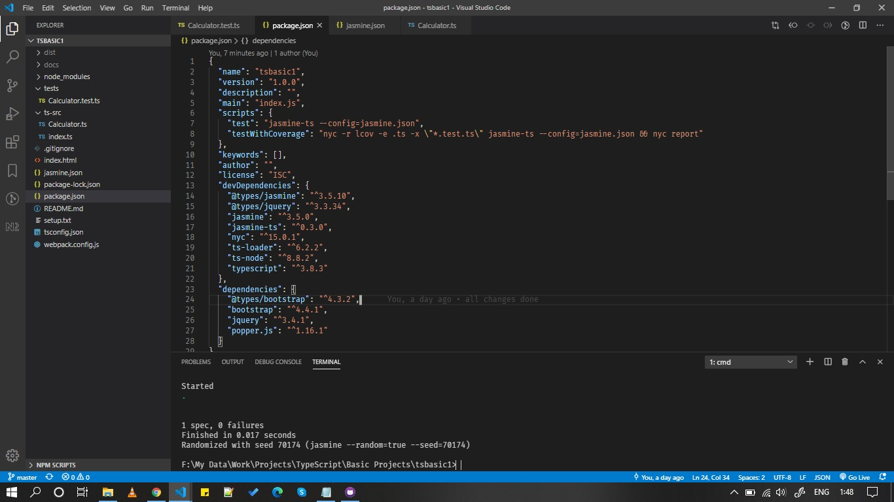

-
You will need following npm packages globally installed
npm install -g webpack --verbose
npm install -g typedoc --verbose
- Create an empty directory called 'tsbasic'.
-
Run following command to create 'package.json'.
D:\tsbasic\npm init -y
-
Run following command to create 'tsconfig.json'
D:\tsbasic\tsc --init
To enable source map, uncomment "sourceMap": true," line
-
We need to add 'ts-loader' as develpment dependency.
D:\tsbasic\npm install --save-dev ts-loader
this will add following entry in package.json
"devDependencies":
{
"ts-loader": "^6.0.4"
}
-
Install typescript as development dependency.
npm install typescript --save-dev
-
Run following commands from terminal to install the packages.
npm install jquery
npm install popper.js
npm install bootstrap
npm install --save-dev @types/jquery
npm install --save @types/bootstrap
-
Create a directory 'ts-src' in 'sample' folder. This folder will
contain all the typescript source files.
-
create 'index.ts' file in ts-src folder. Add following code snippet in
the file.
/**
*Class Person model which has name and age
*
* @class Person
*/
class Person {
/**
*Creates an instance of Person.
* @param {string} name name of the person
* @param {number} age age should be less than 50
* @memberof Person
*/
constructor(private name: string, private age: number) {
}
/**
*displays the name of person in index.html test div
*
* @memberof Person
*/
print(): void {
console.log(this.name + " " + this.age);
$("#test").html(this.name);
}
}
let abhay = new Person("Abhay", 30);
abhay.print();
-
Create 'webpack.config.js' in 'tsbasic' folder. Add follwing
configuration in the file.
module.exports = {
mode: "production",
//devtool: "inline-source-map",
entry: "./ts-src/index.ts",
output: {
filename: "./build/bundle.js"
},
resolve: {
// Add `.ts` and `.tsx` as a resolvable extension.
extensions: [".ts", ".tsx", ".js"]
},
module: {
rules: [
// all files with a `.ts` or `.tsx` extension will be handled by `ts-loader`
{
test: /\.tsx?$/,
loader: "ts-loader"
}
]
}
};
-
Create an index.html in 'tsbasic' folder. Add following code inside
it.
<!DOCTYPE html>
<html lang="en">
<head>
<meta charset="UTF-8">
<meta name="viewport" content="width=device-width, initial-scale=1.0">
<title>TypeScript Setup Homepage</title>
<link rel="stylesheet" href="node_modules/bootstrap/dist/css/bootstrap.min.css">
<script src="node_modules/jquery/dist/jquery.min.js"></script>
<script src="node_modules/popper.js/dist/umd/popper.min.js"></script>
<script src="node_modules/bootstrap/dist/js/bootstrap.min.js"></script>
</head>
<body>
<div class="container">
<p>To build the project
<div><b>webpack</b></div>
</p>
<p>
To generate documentation
<div><b>typedoc --out docs ts-src</b></div>
</p>
<div id="test"></div>
</div>
</body>
<script src="dist/build/bundle.js"></script>
</html>
-
Now you can run 'webpack' command to build the project.
D:\tsbasic\webpack
this will create 'dist' folder in sample directory.
-
To generate documentation from the typescript source code, run
following command.
typedoc --out docs ts-src
-
Unit Testing
Create new directory 'tests' in root folder Create a new test file
called 'Calculator.test.ts'
import Calculator from '../src/Calculator';
describe('calculate', function () {
it('add', function () {
let result = Calculator.Sum(5, 2);
expect(result).toBe(6);
});
});
/* In src / Calculator.ts add following code, */
export default class calculator {
static Sum(a: number, b: number): number {
let c = a + b;
return c;
}
static Difference(a: number, b: number): number {
let c = a - b;
return c;
}
}
D:\tsbasic\npm i -D jasmine jasmine-ts nyc ts-node typescript
D:\tsbasic\npm i -D @types/jasmine
In package.json add following configuration
"scripts": {
"test": "jasmine-ts --config=jasmine.json",
"testWithCoverage": "nyc -r lcov -e .ts -x \"*.test.ts\" jasmine-ts --config=jasmine.json && nyc report"
}
Create a new file 'jasmine.json' which will contain the configuration
for jasmine.
{
"spec_dir": "tests",
"spec_files": ["**/*[tT]est.ts"]
}
-
package.json will look similar to this,
{
"name": "tsbasic",
"version": "1.0.0",
"description": "",
"main": "index.js",
"scripts": {
"test": "jasmine-ts --config=jasmine.json",
"testWithCoverage": "nyc -r lcov -e .ts -x \"*.test.ts\" jasmine-ts --config=jasmine.json && nyc report"
},
"keywords": [],
"author": "",
"license": "ISC",
"devDependencies": {
"@types/jasmine": "^3.5.10",
"@types/jquery": "^3.3.34",
"jasmine": "^3.5.0",
"jasmine-ts": "^0.3.0",
"nyc": "^15.0.1",
"ts-loader": "^6.2.2",
"ts-node": "^8.8.2",
"typescript": "^3.8.3"
},
"dependencies": {
"@types/bootstrap": "^4.3.2",
"bootstrap": "^4.4.1",
"jquery": "^3.4.1",
"popper.js": "^1.16.1"
}
}
To run the tests,
D:\tsbasic\npm test
-
Folder structure will look similar to this,
